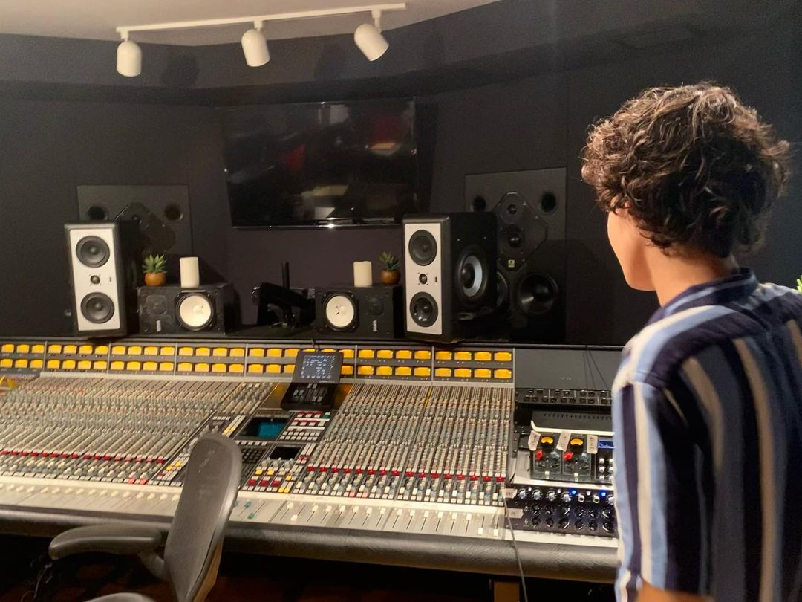
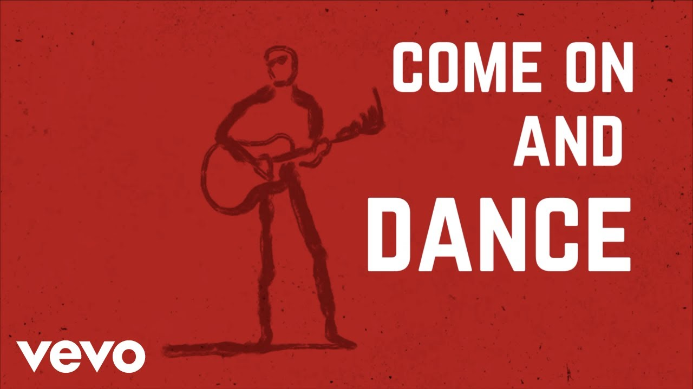

Latest News
New single "I Get High" is released!
Publish Date: January 27, 2023
I Get High, the first ever solo Rockyts song has been released. As we've previously heard on Instagram of Rockyt's rock covers of modern pop songs, this new song takes a drastic direction from their previous albums and singles. It sounds more like a modern pop song with classic rock influences than a classic rock 'n' roll song. This very interesting new take on the Rockyts' music can now be streamed on all platforms.
The Rockyts: A solo project

Publish Date: November 19, 2022
It's official. Jeremy has just announced on Instagram about the new direction the band is taking. Although it isn't the end, Camden left the band to study abroad. And with Keith being gone since last year, Jeremy is left alone to continue the band by himself. He has announced that the band will now be a solo project, and still has a lot of music to show us.
Winter Wonderland

Publish Date: December 1, 2021
It's almost Christmas, and Rockyts have a present to give us! This cover of Winter Wonderland, wonderfully Rockyt-ified, is now available to listen on all streaming platforms. Although Keith's bass isn't present, this is still a jolly song for the holiday season.
It's a Dirty Shame
Publish Date: May 28, 2021
It has been a year since the band's first recording session for Come on and Dance. Although bassist Keith has gone to study, this archival recording of the band performing the classic song, It's a Dirty Shame has been released as a non-album single. This version is different to the previous version posted on YouTube. Mainly, it's a lot cleaner, and it also has backing vocals!
Come on and Dance: first Rockyts album!

Publish Date: September 18, 2020
It's happened. The first ever Rockyts album has been released. Full of classic tunes as well as fun originals, this album is bringing classic rock 'n' roll back into the charts. Although the album is rather short, it's well worth a listen.
All of the Time
Publish Date: August 28, 2020
Today, The Rockyts have released their first single, entitled "All of the Time". This is to be the first single pulled from their first album. A tune worthy of a hit, give it a listen!